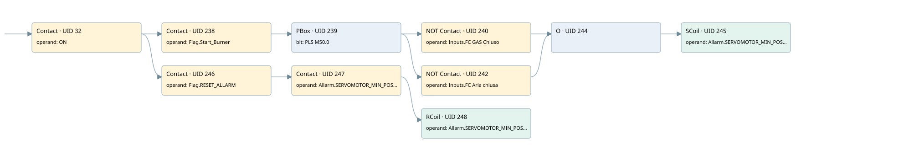

burner servomotor not in minimal position
burner control · 검색 색인 순서 2 · 원본 내부 NID 추정 2
백업 PLF 원본의 2678712 바이트 위치에서 복원한 XML. 검색 문서 1855의 객체 키 16102200cf10000000000000와 연결했다. 이름 해석 9/9개. 남은 RefId는 상수 또는 미해석 참조다.
연결 구조 다시 그리기
원본 Part/PCon/Wire를 이용한 연결도다. TIA 화면의 래더 배치 또는 실행 결과를 재현한 그림은 아니다. 핀 연결은 아래 표와 원본 XML을 기준으로 읽는다. 노드 위에 마우스를 두면 피연산자 이름을 볼 수 있다.

접점·코일·블록과 피연산자
| Part UID | Gate | Negated 핀 | 연결 피연산자 |
|---|---|---|---|
| 32 | Contact | operand = ON | |
| 238 | Contact | operand = Flag.Start_Burner | |
| 239 | PBox | bit = PLS M50.0 | |
| 240 | Contact | operand | operand = Inputs.FC GAS Chiuso |
| 242 | Contact | operand | operand = Inputs.FC Aria chiusa |
| 244 | O | ||
| 245 | SCoil | operand = Allarm.SERVOMOTOR_MIN_POS_ALL | |
| 246 | Contact | operand = Flag.RESET_ALLARM | |
| 247 | Contact | operand = Allarm.SERVOMOTOR_MIN_POS_ALL | |
| 248 | RCoil | operand = Allarm.SERVOMOTOR_MIN_POS_ALL |
접점 경로를 펼친 조건식
Contact·O/A·비교기의 원본 연결을 읽기 쉽게 펼친 보조 해석이다. POWER는 전원 레일 시작을 뜻한다. 호출 블록·에지·타이머의 내부 동작과 다중 쓰기 순서는 이 표로 실행 검증하지 않았다. 미해석 핀과 RefId는 원문 연결표에서 확인한다.
| UID | 동작 | 대상 | 원본 접점 경로 | 내용 |
|---|---|---|---|---|
| 245 | SCoil | Allarm.SERVOMOTOR_MIN_POS_ALL | ((PBox UID 239.out (블록 동작 확인) AND NOT [Inputs.FC GAS Chiuso]) OR (PBox UID 239.out (블록 동작 확인) AND NOT [Inputs.FC Aria chiusa])) | 조건 성립 시 Set |
| 248 | RCoil | Allarm.SERVOMOTOR_MIN_POS_ALL | ((ON AND Flag.RESET_ALLARM) AND Allarm.SERVOMOTOR_MIN_POS_ALL) | 조건 성립 시 Reset |
원본 배선 연결
| Wire UID | 동일 Wire 연결 끝점 |
|---|---|
| 192 | Powerrail {} ↔ Part 32.in |
| 31 | ORef 33 (ON) ↔ Part 32.operand |
| 259 | Part 32.out ↔ Part 238.in ↔ Part 246.in |
| 260 | ORef 249 (Flag.Start_Burner) ↔ Part 238.operand |
| 261 | Part 238.out ↔ Part 239.in |
| 262 | ORef 250 (PLS M50.0) ↔ Part 239.bit |
| 263 | Part 239.out ↔ Part 240.in ↔ Part 242.in |
| 264 | ORef 251 (Inputs.FC GAS Chiuso) ↔ Part 240.operand |
| 49 | Part 240.out ↔ Part 244.in1 |
| 268 | ORef 253 (Inputs.FC Aria chiusa) ↔ Part 242.operand |
| 50 | Part 242.out ↔ Part 244.in2 |
| 24 | Part 244.out ↔ Part 245.in |
| 273 | ORef 255 (Allarm.SERVOMOTOR_MIN_POS_ALL) ↔ Part 245.operand |
| 274 | ORef 256 (Flag.RESET_ALLARM) ↔ Part 246.operand |
| 275 | Part 246.out ↔ Part 247.in |
| 276 | ORef 257 (Allarm.SERVOMOTOR_MIN_POS_ALL) ↔ Part 247.operand |
| 277 | Part 247.out ↔ Part 248.in |
| 278 | ORef 258 (Allarm.SERVOMOTOR_MIN_POS_ALL) ↔ Part 248.operand |
식별자 해석 근거 9개
| ORef UID | RefId | 이름 | IdentXmlPart 파일 | 해석 방법 |
|---|---|---|---|---|
| 33 | 1 | ON | 0582-IdentXmlPart.xml | UID/RID + search-text + NID agreement |
| 249 | 19 | Flag.Start_Burner | 0585-IdentXmlPart.xml | UID/RID + search-text + NID agreement |
| 250 | 20 | PLS M50.0 | 0582-IdentXmlPart.xml | UID/RID + search-text + NID agreement |
| 251 | 223 | Inputs.FC GAS Chiuso | 0585-IdentXmlPart.xml | UID/RID + search-text + NID agreement |
| 253 | 224 | Inputs.FC Aria chiusa | 0585-IdentXmlPart.xml | UID/RID + search-text + NID agreement |
| 255 | 23 | Allarm.SERVOMOTOR_MIN_POS_ALL | 0585-IdentXmlPart.xml | UID/RID + search-text + NID agreement |
| 256 | 8 | Flag.RESET_ALLARM | 0585-IdentXmlPart.xml | UID/RID + search-text + NID agreement |
| 257 | 23 | Allarm.SERVOMOTOR_MIN_POS_ALL | 0585-IdentXmlPart.xml | UID/RID + search-text + NID agreement |
| 258 | 23 | Allarm.SERVOMOTOR_MIN_POS_ALL | 0585-IdentXmlPart.xml | UID/RID + search-text + NID agreement |
검색 코드 보조 자료
참조 명칭을 찾기 위한 자료이며 실행 순서나 AND/OR 관계는 위 연결표로 확인한다.
"on" "flag".start_burner "pls m50.0" "inputs"."fc gas chiuso" "allarm".servomotor_min_pos_all "flag".reset_allarm "allarm".servomotor_min_pos_all "allarm".servomotor_min_pos_all "inputs"."fc aria chiusa"